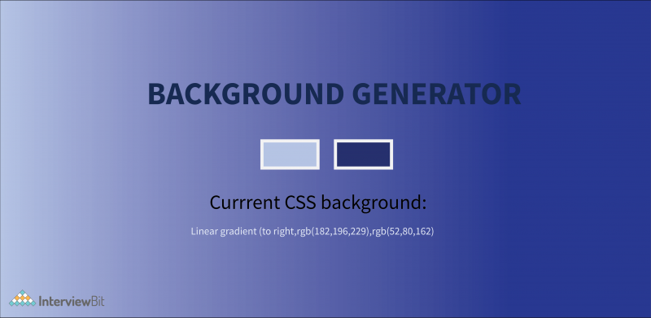

Background-Generator

Describtion
As a Next step, it’s time to have an understanding of some basic JavaScript. How about making a basic background or gradient color generator, where you will choose a color from the palette and that color will become the background. This project aims to find the best-looking background gradient for your project. You just have to select the colors you want from the color picker and then copy the code displayed and paste it into your code as a background color. It’s That Simple!
Code
codeCotribute
A1_Ritik
Purva_123
Tanmay_Lanjewar
Nikhil_4521